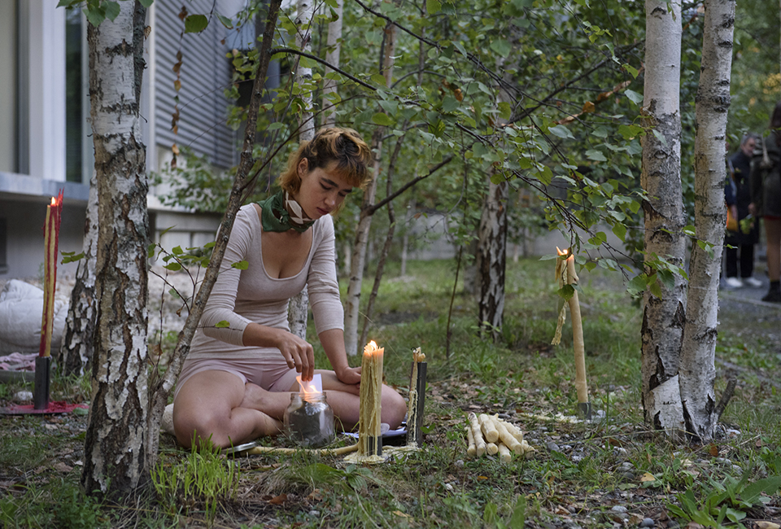
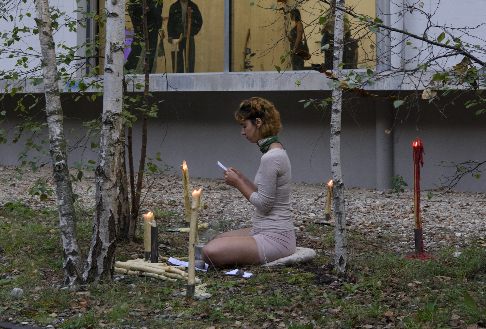
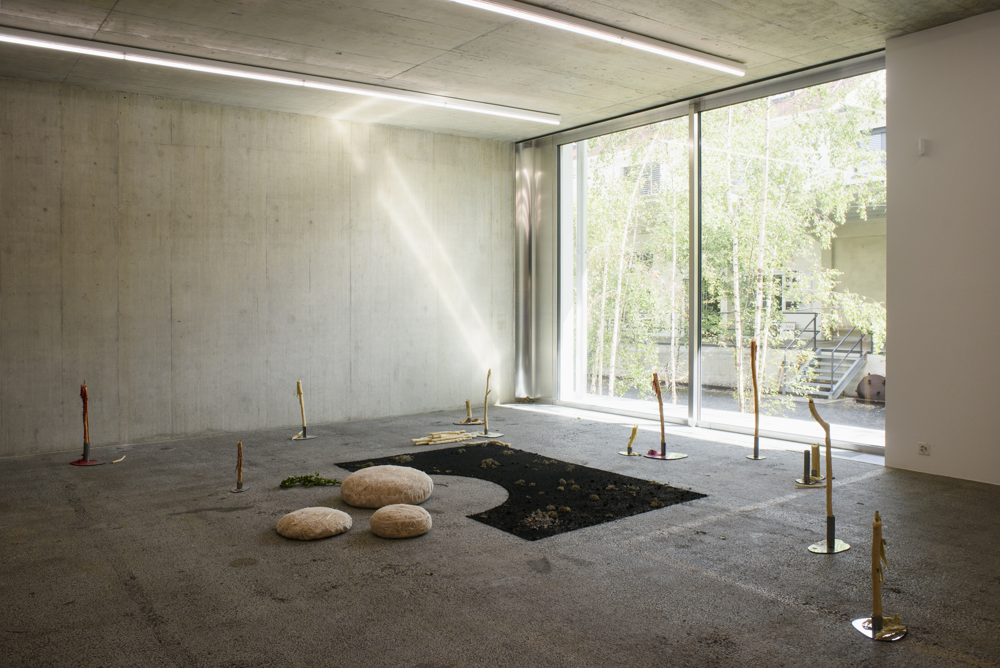
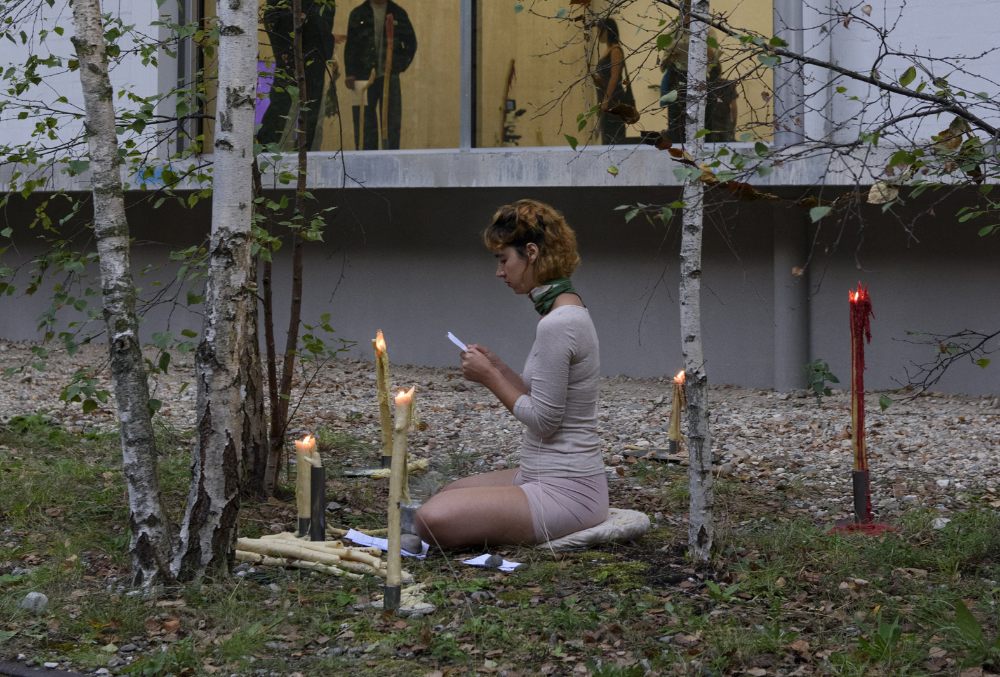
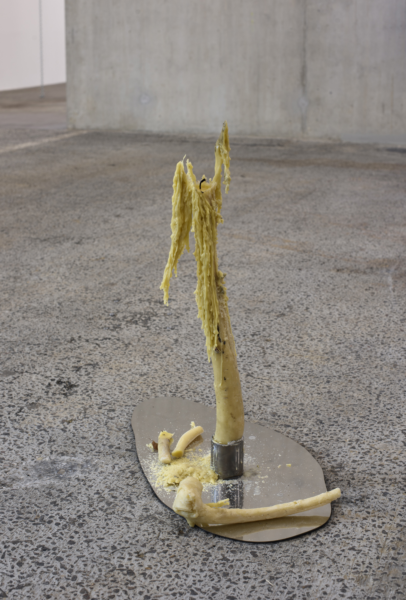

Untiteld (Fire Walk With Me)
Various materials, beeswax, rapeseed wax, cotton wick, metal, ashes, lichen, cotton tulle, straw, birch leaves
Revolt Against the Sun! Graduation Exhibition
Curated by Chus Martínez and Margaux Bonopera
Kunsthausbaselland, Switzerland
August 2025
Photographs : Christian Knörr





